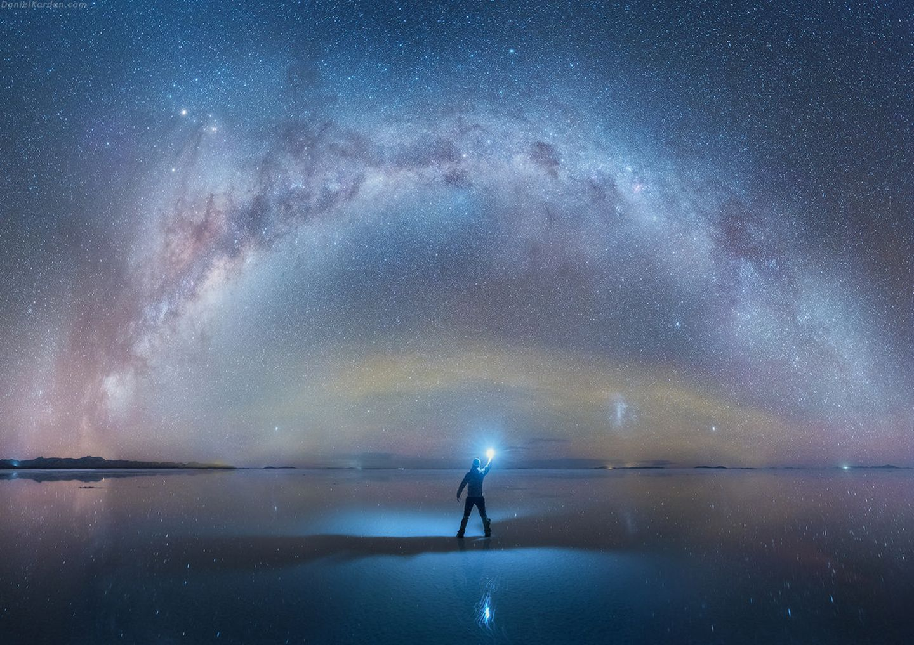
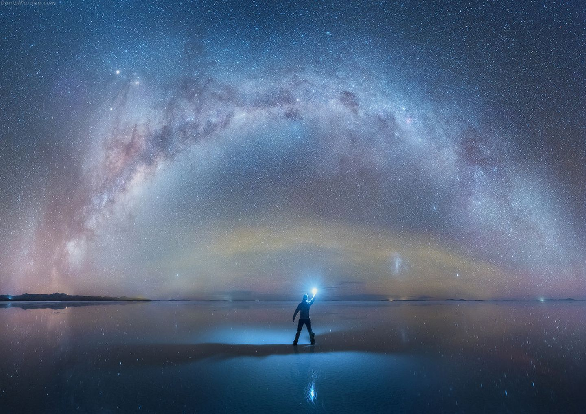

Bolivia’s Salar de Uyuni is considered one of the most extreme and remarkable vistas in all of South America,
if not Earth. Stretching more than 4,050 square miles of the Altiplano,
it is the world’s largest salt flat,
left behind by prehistoric lakes evaporated long ago. Here, a thick crust of salt extends to the horizon, covered by quilted,
polygonal patterns of salt rising from the ground.
At certain times of the year, nearby lakes overflow and a thin layer of water transforms the flats into a stunning reflection of the sky.
This beautiful and otherworldly terrain serves as a lucrative extraction site for salt and lithium—the element responsible for powering laptops,
smart phones, and electric cars.
In addition to local workers who harvest these minerals,
the landscape is home to the world's first salt hotel and populated by road-tripping tourists.
The harsh beauty and desolateness of Salar de Uyuni can make for an incredible experience or a logistical nightmare.
 
